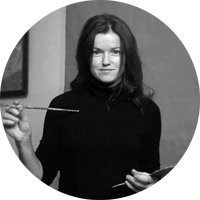
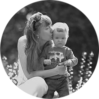
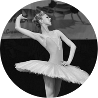
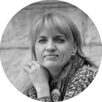
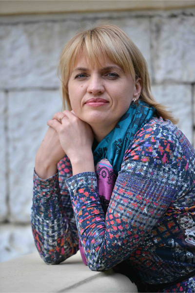
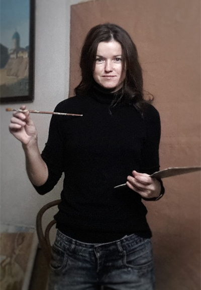
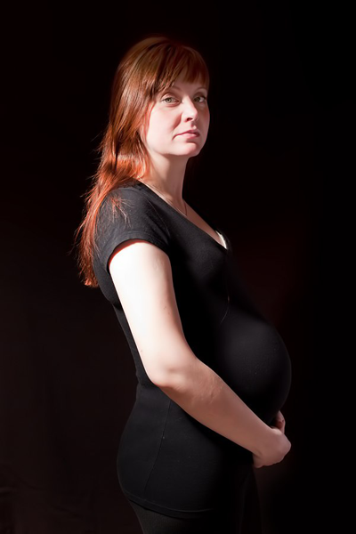
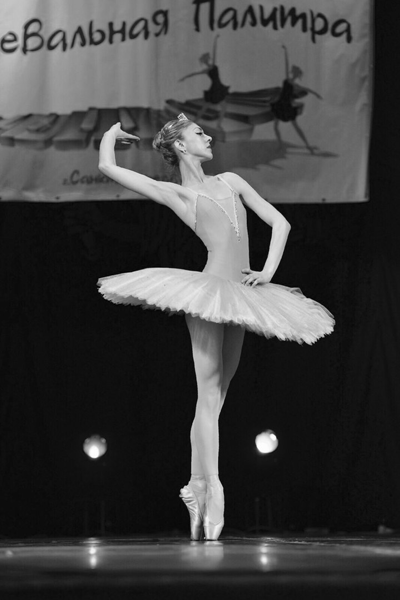

<!DOCTYPE html>
<html>
  <head>
    <title>“Аист на лире”</title>
    <meta charset="utf-8">
    <meta name="viewport" content="width=device-width, minimum-scale=1.0, maximum-scale=1.0, user-scalable=no">
    <meta property="og:type" content="website">
    <meta property="og:title" content="“Аист на лире”">
    <meta property="og:image" content="https://mozgva.com/assets/mozgvaShare-940e4dfcb74aff00ab66abd288bb5316170478ef08ae6ab2287b8610af9a9206.png">
    <meta property="og:description" content="“Аист на лире”">
    <meta property="og:url" content="https://mozgva.com/">
    <link href="https://fonts.googleapis.com/css?family=Open+Sans|Pattaya&amp;amp;subset=cyrillic" rel="stylesheet">
    <link href="css/jquery.modal.css" type="text/css" rel="stylesheet">
    <link href="css/frameborder.css">
    <link href="css/main.css" type="text/css" rel="stylesheet">
    <style>#fakeloader {background: #fff url("img/logo-placholder.png") no-repeat center center !important;    position: fixed; width: 100%; height: 100%; top: 0px; left: 0px;   z-index: 999; } </style>
  </head>
</html>
<body class="body">
  <div id="fakeloader"></div>
  <div class="wrap">
    <div class="nav fixed">
      <div class="nav__logo top-style"></div>
      <div class="nav__block" id="menu-center1"><a class="top-style-li1 active" href="#one-page">Вступление</a><a class="top-style-li2" href="#about">Экспозиция</a><a class="top-style-li3" href="#curs">Разработка</a><a class="top-style-li4" href="#structure">Реприза</a><a class="top-style-li5" href="#otz">Кода</a></div>
    </div>
    <section class="one-page" id="one-page">
      <div class="slider-one">
        <div class="slider-one__item" style="background: url(&quot;img/slide1.jpg&quot;) center center; background-size: cover;"></div>
        <div class="slider-one__item" style="background: url(&quot;img/slide2.jpg&quot;) center center; background-size: cover;"></div>
        <div class="slider-one__item" style="background: url(&quot;img/slide3.jpg&quot;) center center; background-size: cover;"></div>
      </div>
      <div class="one-page__text">
        <div class="nav-mob"><a href="#ex1" rel="modal:open">меню <i> </i><i> </i><i></i></a></div>
        <p>“Аист на лире” — это не просто школа материнства. Открывая возможность познавать мир средствами искусства, мы настроим Вас с малышом на волну взаимопонимания и Любви еще до рождения.</p>
        <p>Вы беременны и готовы заботиться уже сейчас? Начните с живота и Ваш малыш будет умным, здоровым и креативным. </p>
      </div>
    </section>
    <section class="about" id="about">
      <div class="about__block container">
        <div class="nav-mob green"><a href="#ex1" rel="modal:open">меню <i> </i><i> </i><i></i></a></div>
        <h1>Аист на лире</h1>
        <p>Сегодня я поделюсь с Вами своей женской удачей.</p>
        <p>Беременность и роды для меня были самыми счастливыми, красивыми и значимыми. Значимыми во всей жизни. Материнство открыло резервы и новые горизонты развития. И дело не только в гармонах, эйфории и ответственности. Я задумалась, что делать дальше. Как сделать все, что произрастает из опыта, экспертности в музыке, профессиональных возможностей, — все это отдать и сделать полезным. Я взяла в помощники Моцарта, Боттичелли, Чайковского, Пушкина, Бальмонта и др.</p>
        <p>“Аист на Лире” — для Вас, будущие мамы, которые ценят искусство и мечтают о здоровых, способных и творческих детях.</p>
        <div class="about__titel clearfix"><a href="#ex6" rel="modal:open">Тюльтина Людмила,</a>
          <p>руководитель Школы материнства<br>и автор программы “Аист на лире”</p>
        </div>
        <div class="about__addres"><a class="map" href="https://yandex.ru/maps/-/CBUnbNewKB" target="blanck"><i></i>Проспект Кима, дом 26В</a><a class="phone" href="tel:+79313623975"> <i></i>+7 (931) 362-39-75</a><a class="pr" href="#ex2" rel="modal:open"><i></i>Записаться на пробное занятие</a><a class="web" href="#ex3" rel="modal:open"><i></i>Записаться на вебинар</a></div>
      </div>
      <div class="pos-bottom"></div>
    </section>
    <section class="curs" id="curs">
      <div class="curs__block container">
        <div class="nav-mob green"><a href="#ex1" rel="modal:open">меню <i> </i><i> </i><i></i></a></div>
        <h2>О нашем курсе</h2>
        <p>Занятия по программе «Аист на лире» ведутся по трем направлениям:</p>
        <ul>
          <li>Цикл лекций «Музыка и беременность» (с вокальной практикой и дыхательной гимнастикой и пренатальным блоком)</li>
          <li>Мастер-классы по живописи «С чистого листа» (акварель, графика, акрил, пастель)</li>
          <li>Комплекс оптимальных физических упражнений «Гимнастика для беременных» (фитбол, растяжка)</li>
        </ul>
        <p>Основой работы школы является убеждение в важности осознанной и деятельной беременности. Убеждение в ценности искусства, применение комплексного подхода. Приходите к нам на занятия, и Ваш малыш узнает об этом мире все самое красивое, главное и полезное.</p>
      </div>
      <div class="curs__slider">
        <h2>Педагоги</h2>
        <div class="slider-ped_container">
          <div class="slider-ped">
            <div class="slider-ped__item"><a href="#ex5" rel="modal:open">
                <p>Ольга Васильева</p><span>живопись</span></a></div>
            <div class="slider-ped__item"><a href="#ex6" rel="modal:open">
                <p>Людмила Тюльтина</p><span>автор курса</span></a></div>
            <div class="slider-ped__item"><a href="#ex7" rel="modal:open">
                <p>Анна Вальдес</p><span>гимнастика</span></a></div>
            <div class="slider-ped__item"><a href="#ex4" rel="modal:open">
                <p>Елена Маркова-Бертова</p><span>психолог</span></a></div>
          </div>
        </div>
      </div>
      <div class="pos-bottom"></div>
    </section>
    <section class="structure" id="structure">
      <div class="structure__block container">
        <div class="nav-mob green"><a href="#ex1" rel="modal:open">меню <i> </i><i> </i><i></i></a></div>
        <h2>Структура курса</h2>
        <p>Прохождение программы подразумевает уровневый подход.</p>
        <p>Рекомендуется проходить программу поэтапно, начиная с элементарного курса. Прохождение базового и интенсивного курса обусловлено интересом, желанием и оптимальным состоянием женщины в период 2 и 3 триместра.</p>
        <p>Формирование групп предполагает предварительный отбор в соответствии с уровнем арт-опыта, количеством беременностей, семейного положения и индивидуальных особенностей.</p>
      </div>
      <div class="structure__row clearfix">
        <div class="structure__row_item">
          <div class="structure__row_item_titel">
            <h4>Абонемент <br>“Музыка + гимнастика”</h4>
          </div>
          <div class="structure__row_item_middle">
            <ul>
              <li>1 раз в неделю</li>
              <li>Теория и практика</li>
              <li>4 лекции “Музыка и беременность” элементарный курс</li>
              <li>4 занятия “Гимнастика для беременных” (фитбол, растяжка)</li>
              <li>Чай, общение</li>
            </ul>
          </div>
          <div class="structure__row_item_bottom"><a href="#ex2" rel="modal:open">Стоимость 3 500 руб.<br><span>Записаться</span></a></div>
        </div>
        <div class="structure__row_item">
          <div class="structure__row_item_titel">
            <h4>Абонемент <br>“Музыка и беременность”</h4>
          </div>
          <div class="structure__row_item_middle">
            <p>Базовый курс с пренатальным блоком, вокальной практикой, визуально-поэтическим подкреплением.</p>
            <ul>
              <li>Теория и практика</li>
              <li>8 лекции </li>
              <li>Чай, общение</li>
            </ul>
          </div>
          <div class="structure__row_item_bottom"><a href="#ex2" rel="modal:open">Стоимость 4 000 руб.<br><span>Записаться</span></a></div>
        </div>
        <div class="structure__row_item">
          <div class="structure__row_item_titel">
            <h4>Абонемент <br>“С чистого листа”</h4>
          </div>
          <div class="structure__row_item_middle">
            <ul> 
              <li>4 мастер-класса по живописи</li>
              <li>Акварель, графика, темпера, пастель</li>
              <li>Темы “Флора”, “Мамин дневник”, “Мой ребенок” и др.</li>
              <li>Чай, общение</li>
            </ul>
          </div>
          <div class="structure__row_item_bottom pos"><a href="#ex2" rel="modal:open">Стоимость 3 200 руб.<br><span>Записаться</span></a><span class="star">* с учетом расходов на материалы</span></div>
        </div>
        <div class="structure__row_item">
          <div class="structure__row_item_titel">
            <h4>Абонемент <br>“Все включено”</h4>
          </div>
          <div class="structure__row_item_middle padding-right">
            <ul>
              <li>8 лекций “Музыка и беременность” (базовый курс)</li>
              <li>8 занятий “Гимнастика для беременных” (фитбол, растяжка)</li>
              <li>4 мастер-класса по живописи (акварель, графика, пастель, темпера)</li>
              <li>Чай, общение</li>
            </ul>
          </div>
          <div class="structure__row_item_disck"><a href="#ex8" rel="modal:open">Диск для домашего<br>прослушивания в подарок!</a></div>
          <div class="structure__row_item_bottom"><a href="#ex2" rel="modal:open">Стоимость 10 000 руб.<br><span>Записаться</span></a></div>
        </div>
        <div class="structure__row_item">
          <div class="structure__row_item_titel">
            <h4>Вебинар<br>“Музыка и беременность”</h4>
          </div>
          <div class="structure__row_item_middle">
            <ul>
              <li>Правила активного слушания</li>
              <li>Пренатальный блок</li>
              <li>Визуально-поэтическое сопровождение</li>
              <li>Ответы на вопросы</li>
            </ul>
          </div>
          <div class="structure__row_item_disck"><a href="#ex8" rel="modal:open">Диск для домашего<br>прослушивания в подарок!</a></div>
          <div class="structure__row_item_bottom"><a href="#ex2" rel="modal:open">Стоимость 500 руб. 1 занятие<br><span>Записаться</span></a></div>
        </div>
        <div class="structure__row_item">
          <div class="structure__row_item_titel">
            <h4>Разовое посещение</h4>
          </div>
          <div class="structure__row_item_middle">
            <ul>
              <li>Музыка и беременность <br><b>600 руб.  </b>/  для пап <b>500 руб.</b></li>
              <li>Гимнастика <br><b>500 руб. </b></li>
              <li>Живопись<br><b>800 руб.  </b>/  для пап <b>500 руб.</b></li>
            </ul>
          </div>
          <div class="structure__row_item_bottom"><a class="bott" href="#ex2" rel="modal:open"><span>Записаться</span></a></div>
        </div>
      </div>
      <div class="pos-bottom"></div>
    </section>
    <section class="otz" id="otz">
      <div class="otz__block container">
        <div class="nav-mob green"><a href="#ex1" rel="modal:open">меню <i> </i><i> </i><i></i></a></div>
        <h2>Отзывы</h2>
      </div>
      <div class="slider-otz_container">
        <div class="slider-otz">
          <div class="slider-otz__item">
            <p>Дарина Драгомир</p><span>Добрый вечер!            Хочу поблагодарить команду арт-школы "Аист на лире" за кучу положительных эмоций       и полезной информации      . Мы и подышали     , и попели     , и музыку послушали      , и порисовали</span>
          </div>
          <div class="slider-otz__item">
            <p>Татьяна Кулик</p><span>Прохождение программы подразумевает уровневый подход.</span>
          </div>
          <div class="slider-otz__item">
            <p>Светлана Зорнина</p><span>Приходите к нам на занятия, и Ваш малыш узнает об этом мире все самое красивое, главное и полезное.</span>
          </div>
          <div class="slider-otz__item">
            <p>Дарина Драгомир</p><span>Добрый вечер!            Хочу поблагодарить команду арт-школы "Аист на лире" за кучу положительных эмоций       и полезной информации      . Мы и подышали     , и попели     , и музыку послушали      , и порисовали</span>
          </div>
        </div>
        <div class="pos-bottom otzb"></div>
      </div>
    </section>
    <footer class="footer">
      <p>© Арт-школа “Аист&nbsp;на&nbsp;лире” 2017 год</p>
      <div class="footer__phone"><a class="phone" href="tel:89650679818">8 (965) 067 9818,</a><a class="phone" href="tel:89313623975">8 (931) 362 3975</a></div>
      <div class="footer__social"><a class="vk" href="https://vk.com/aistnalire" target="blanck"></a><a class="ist" href="https://www.instagram.com/aistnalire/" target="blanck"></a><a class="fb" href="#"></a></div>
      <div class="footer__logo"><a class="logo" href="http://krosgros.ru" target="blanck"></a></div>
    </footer>
    <script src="js/libs.min.js"></script>
    <script src="js/main.js"></script>
    <script> $("#fakeloader").fakeLoader();</script>
  </div>
  <div class="modal" id="ex1" style="display:none;" role="dialog">
    <div class="popup-style container-nav">
      <div class="nav">
        <div class="nav__logo top-style"></div>
        <div class="nav__block" id="menu-center"><a class="top-style-li1 active" href="#one-page" rel="modal:close">Вступление</a><a class="top-style-li2" href="#about" rel="modal:close">Экспозиция</a><a class="top-style-li3" href="#curs" rel="modal:close">Разработка</a><a class="top-style-li4" href="#structure" rel="modal:close">Реприза</a><a class="top-style-li5 bottom-scroll" href="#otz" rel="modal:close">Кода</a></div>
      </div>
    </div>
  </div>
  <div class="modal gren" id="ex2" style="display:none;" role="dialog">
    <div class="popup-style form">
      <div class="form_radio-top clearfix">
        <div class="chek">
          <label for="acti1"> 
            <input class="int js-check" id="acti1" name="group1" type="radio" checked="checked"><span>Заявка на пробное занятие</span>
          </label>
        </div>
        <div class="chek">
          <label for="acti2"> 
            <input class="int int js-check" id="acti2" name="group1" type="radio"><span>Заявка на вебинар</span>
          </label>
        </div>
      </div>
      <div class="form_radio-middle clearfix">
        <div class="chek item1">
          <label for="acti3"> 
            <input class="int" id="acti3" name="group2" type="radio" checked="checked"><b></b>
          </label>
        </div>
        <div class="chek item2">
          <label for="acti4"> 
            <input class="int" id="acti4" name="group2" type="radio"><b></b>
          </label>
        </div>
        <div class="chek item3">
          <label for="acti5"> 
            <input class="int" id="acti5" name="group2" type="radio"><b></b>
          </label>
        </div>
      </div>
      <div class="form_radio-form">
        <h4>Укажите контактную информацию:</h4>
        <div class="error1">
          <input class="int" type="text" placeholder="Фамилия"><span>Пожалуйста, заполните поле!</span>
        </div>
        <div class="error1">
          <input class="int" type="text" placeholder="Имя"><span>Пожалуйста, заполните поле!</span>
        </div>
        <div class="error1">
          <input class="int" type="text" placeholder="Телефон"><span>Пожалуйста, заполните поле!</span>
        </div>
        <div class="error1">
          <input class="int" type="text" placeholder="Email"><span>Пожалуйста, заполните поле!</span>
        </div>
        <div class="form_radio-form_label">
          <div class="chek">
            <label class="clearfix" for="acti6">
              <input id="acti6" type="checkbox"><b></b><span>Я согласен на обработку персональных данных</span>
            </label>
          </div>
        </div>
        <button>Отправить!</button>
      </div>
    </div>
  </div>
  <div class="modal gren" id="ex3" style="display:none;" role="dialog">
    <div class="popup-style form">
      <div class="form_radio-top clearfix">
        <div class="chek">
          <label for="acti12"> 
            <input class="int" id="acti12" name="group3" type="radio"><span>Заявка на пробное занятие</span>
          </label>
        </div>
        <div class="chek">
          <label for="acti21"> 
            <input class="int int" id="acti21" name="group3" type="radio" checked="checked"><span>Заявка на вебинар</span>
          </label>
        </div>
      </div>
      <div class="form_radio-middle clearfix">
        <div class="chek item1">
          <label for="acti31"> 
            <input class="int" id="acti31" name="group5" type="radio" checked="checked"><b></b>
          </label>
        </div>
        <div class="chek item2">
          <label for="acti41"> 
            <input class="int" id="acti41" name="group5" type="radio"><b></b>
          </label>
        </div>
        <div class="chek item3">
          <label for="acti51"> 
            <input class="int" id="acti51" name="group5" type="radio"><b></b>
          </label>
        </div>
      </div>
      <div class="form_radio-form">
        <h4>Укажите контактную информацию:</h4>
        <input class="int" type="text" placeholder="Фамилия">
        <input class="int" type="text" placeholder="Имя">
        <input class="int" type="text" placeholder="Телефон">
        <input class="int" type="text" placeholder="Email">
        <div class="form_radio-form_label">
          <div class="chek">
            <label class="clearfix" for="acti7">
              <input id="acti7" type="checkbox"><b></b><span>Я согласен на обработку персональных данных</span>
            </label>
          </div>
        </div>
        <button>Отправить!</button>
      </div>
    </div>
  </div>
  <div class="modal" id="ex4" style="display:none;" role="dialog">
    <div class="popup-style ped-style">
      <div class="ped-style__block clearfix">
        <div class="ped-style__block_left"></div>
        <div class="ped-style__block_right">
          <h4>Елена Маркова-Бертова, психолог</h4>
          <p>Елена Павловна Маркова-Бертова. Психолог. Индивидуальное консультирование.</p>
          <p>Специалист в области перинатальной психологии, секретарь секции «Перинатальная психология и психотерапия» СПб психологического общества, преподаватель гильдии психологов, психотерапевтов и тренеров профессора В. А. Ананьева.</p>
        </div>
      </div>
    </div>
  </div>
  <div class="modal" id="ex5" style="display:none;" role="dialog">
    <div class="popup-style ped-style">
      <div class="ped-style__block clearfix">
        <div class="ped-style__block_left"></div>
        <div class="ped-style__block_right">
          <h4>Ольга Васильева, специалист по живописи</h4>
          <p>Родилась в 1978 году в г. Куйбышеве.</p>
          <p>В 1999 году закончила Самарское художественное училище, специальность - живопись, специализация - художник, педагог.</p>
          <p>1998—1999 гг преподавала в общеобразовательной школе.</p>
          <p>2000—2006 гг. училась во ВГИКе им. Герасимова в Москве, закончила с отличием, специальность — живопись, квалификация — художник кино и телевидения по костюму. Училась у проф. Б. М. Неменского (тот самый известный советский художник и педагог, который составил программы по преподаванию живописи, по которым занимались многие поколения советских учеников и студентов, да и сейчас ими пользуются)</p>
          <p>2000—2006 гг — преподавала частно изобразительное искусство, в-основном детям.</p>
          <p>2009 год — преподавала в СПБГу , на факультете "художник кино", вела живопись и рисунок.</p>
          <p>С 2009 года занимаюсь частной преподавательской практикой, веду уроки рисунка, живописи и композиции с детьми и взрослыми.</p>
          <p>Состою в ассоциации репетиторов профи. ру</p>
          <p>С 2016 года — преподаю рисунок, живопись, композицию в частной школе студии "Нарисуй".</p>
          <p>С 2010 года — член Санкт-Петербургского союза художников, секция живописи.</p>
          <p>Мой работы можно посмотреть на сайте o_vasileva.artnow.ru.</p>
          <p>Считаю, что средства искусства обладают мощнейшими ресурсами не только в области образования, инкультурации, но и в сфере перинатальной арт-терапии.</p>
          <p>Цветовые воздействия на психику мамы и дитя, композиционные и стилевые решения творческих задач перспективно определяют вектор развития личности. Чем раньше мама видит мир в  творческом спектре, тем интереснее и ярче открывается этом мир ребенку.</p>
        </div>
      </div>
    </div>
  </div>
  <div class="modal" id="ex6" style="display:none;" role="dialog">
    <div class="popup-style ped-style">
      <div class="ped-style__block clearfix">
        <div class="ped-style__block_left"></div>
        <div class="ped-style__block_right">
          <h4>Людмила Тюльтина, руководитель</h4>
          <p>Преподаватель курса «Музыка и беременность».</p>
          <p>Родилась 26.09.1975 в г. Слободском Кировской области.</p>
          <p>Закончила детскую хоровую школу, училище искусств по классу хорового дирижирования.</p>
          <p>Закончила институт культуры им. Крупской СПб в 2000 г. по классу хорового дирижирования.</p>
          <p>Более 20 лет музыкальной преподавательской деятельности, опыт работы с детьми разных возрастов.</p>
          <p>Аспирантка 2 курса СПбГИК на кафедре истории и теории культуры с темой диссертации «Музыка в современных практиках инкультурации».</p>
          <p>Автор программы арт-сопровождения беременности «Аист на лире».</p>
          <p>Считаю, что уровень культуры в обществе зависит от развития активного, ответственного отношения к родительству, внедрения новых форматов подготовки к родам и материнству. Вижу в искусстве мощный ресурс для становления ценностного сознания развивающейся личности. Очень хочу, чтобы наши дети были здоровыми, уверенными, креативными, харизмитичными и творческими.</p>
        </div>
      </div>
    </div>
  </div>
  <div class="modal" id="ex7" style="display:none;" role="dialog">
    <div class="popup-style ped-style">
      <div class="ped-style__block clearfix">
        <div class="ped-style__block_left"></div>
        <div class="ped-style__block_right">
          <h4>Анна Вальдес</h4>
          <p>Родилась и выросла в (г. Ленинград) Санкт-Петербурге.</p>
          <p>Окончила:</p>
          <p>1) Университет управления и экономики — факультет социального управления </p>
          <p>2) Медицинский колледж 3 диагностика </p>
          <p>3) НГУ им. Лесгафта — Адаптивная физическая культура — студентка кафедры повышения квалификации и переподготовки  </p>
          <p>Более 9 лет в медицине.</p>
          <p>С детства и по сей занимаюсь классической хореографией под руководством бывшей солистки (Кировского) — ныне Мариинского театра и солистки ГАБТ Н. Давыдовой и Л. А. Галинской. Участвую в международных и всероссийских танцевальных конкурсах, имею награды за первые места  «Танцевальная палитра 2015».</p>
          <p>Теперь о главном: </p>
          <p>В современном мире очень много различных курсов для будущих родителей... Каждые по-своему хороши и полезны, но на данный этап времени мало кто  занимается духовным развитием мамы и малыша... Как правило все занятия направлены на физическую активность и форму будущей мамы и акушерство... </p>
          <p>На самом же деле стоит изначально задуматься о том, что мама и малыш это единое целое и не только физическое здоровье отражается на малыше, но и моральное и психологическое состояние матери. К великому счастью сознательных мам становится больше и больше и я считаю правильным подходом воспитывать и развивать ещё до рождения крохи. Многие спросят как? Начиная со второго триместра беременности малыш слышит звуки , и аудиальное воздействие, пожалуй один из самых верных способов взаимодействовать с малышом. Классическая музыка великих композиторов в совокупностью с лёгкой физической нагрузкой непременно будут действовать положительно на мать и дитя. Научно доказано положительное влияние классической музыки не только на нервную систему, но и на сердечно-сосудистую.</p>
          <p>И ещё хочется добавить: при всём уважении к фитнесу и спорту... это всего-лишь набор движений (упражнений) и важно сделать их наполненными смыслом.</p>
        </div>
      </div>
    </div>
  </div>
  <div class="modal cd-modal" id="ex8" style="display:none;" role="dialog">
    <div class="popup-style cd-style">
      <div class="cd-style__block">
        <h4>Компакт диск “Аист на лире”</h4>
        <p>Дорогие друзья!</p>
        <p>Мы подготовили подборку музыкальных произведений и фрагментов  для индивидуального  прослушивания. </p>
        <p>В аудиоприложении 1 собрана музыка русской и зарубежной инструментальной классики (Моцарт, Чайковский, Лядов, Равель и др.) в исполнении выдающихся музыкантов мира. Это музыка  особенная, т.к. была составлена для занятий с беременными и малышами в соответствии с критериями подбора репертуара. Эта подборка выверена по частоте 5000-7000 Гц, по звуковысотности и тональному плану, что благоприятно влияет на развитие плода и настроение мамы. В ней нет синтетических искажений, грубых и низкочастотных, электронных звуков. Она наполнена Любовью и Красотой. Если Вы цените смысловое пространство искусства — эта музыка для Вас.</p>
        <p>По вопросам приобретения и оптовых продаж 8 (931) 362-39-75, 8 (965) 067-98-18, <a href="mailto:aistnalire@mail.ru ">aistnalire@mail.ru.</a></p>
        <div class="cd-style__block_musik"><span>Треки для ознакомления</span>
          <iframe width="100%" height="166" scrolling="no" frameborder="no" src="https://w.soundcloud.com/player/?url=https%3A//api.soundcloud.com/tracks/337998030&amp;amp;color=ff5500&amp;amp;auto_play=false&amp;amp;hide_related=false&amp;amp;show_comments=true&amp;amp;show_user=true&amp;amp;show_reposts=false"></iframe>
          <iframe iframe width="100%" height="166" scrolling="no" frameborder="no" src="https://w.soundcloud.com/player/?url=https%3A//api.soundcloud.com/tracks/337998379&amp;amp;color=ff5500&amp;amp;auto_play=false&amp;amp;hide_related=false&amp;amp;show_comments=true&amp;amp;show_user=true&amp;amp;show_reposts=false"></iframe>
        </div>
      </div>
    </div>
  </div>
</body>